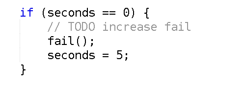

بسم الله الرحمن الرحيم
أولاً نقوم بتصميم الـLabels كما هو موجود بالصورة ..
علماً أن كل واحدٍ من الأصفار الموجودة بالأعلى هي label خاصة مختلفة عن الـlabel التي تحوي كلمة sucess ..
والآن نقوم بعمل دالتين, الأولى لزيادة عدد الإجابات الصحيحة بـ1 والثانية لزيادة عدد الإجابات الخاطئة بـ1.
وأخيراً نستخدم الدالة في المكان المناسب (عندما يصل الوقت المناسب في الـtimer)
فتحصل الزيادة المطلوبة
للمزيد قم بالرجوع للصفحة الرئيسية
لا تنسونا من صالح دعائكم